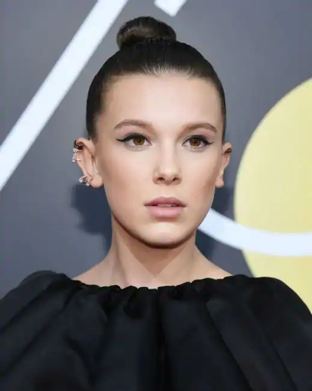
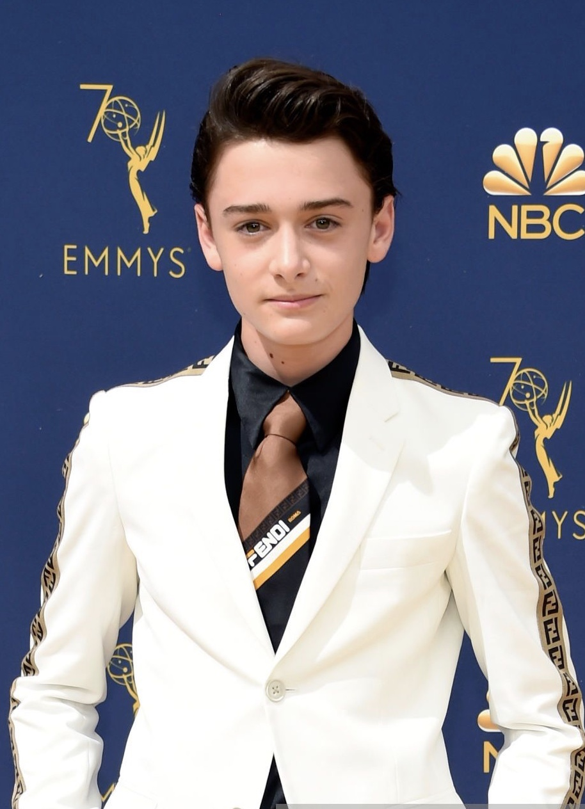
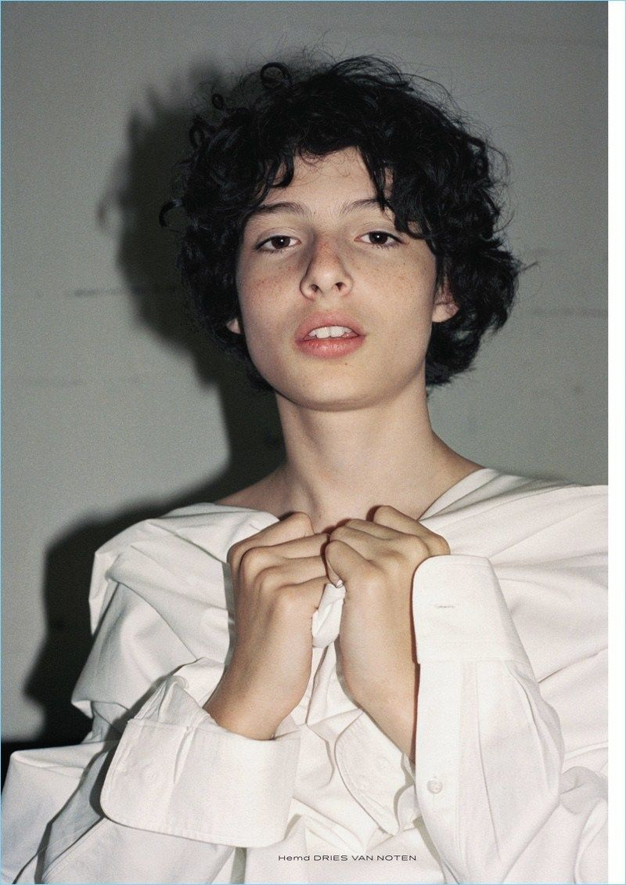
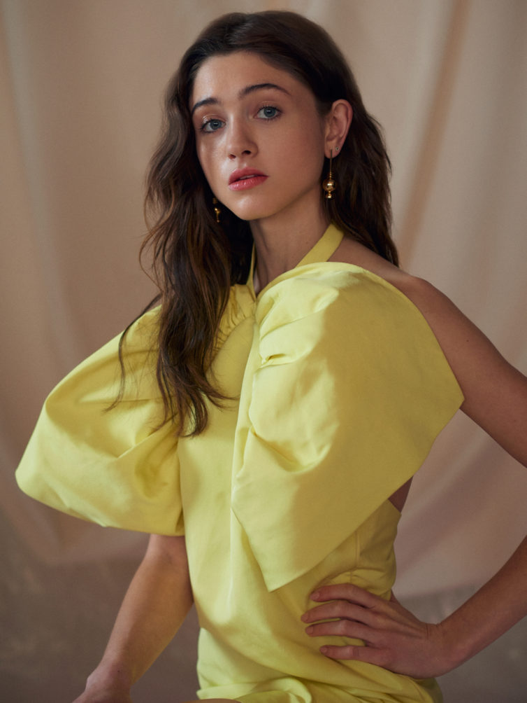
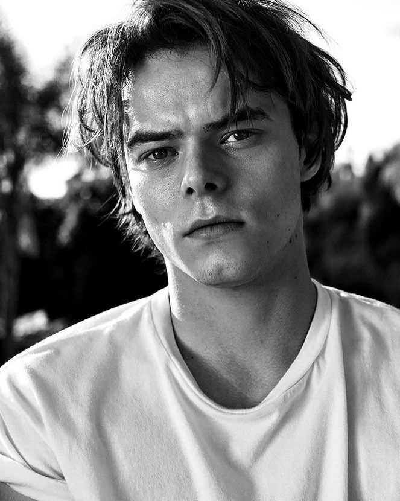
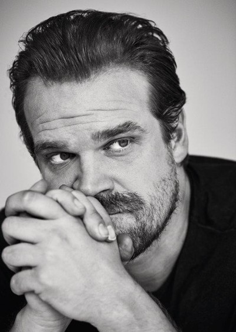
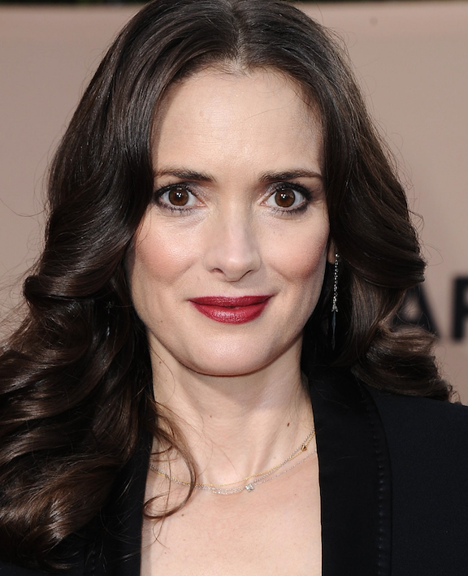

Millie Bobby Brown: Ő játsza Tizenegyet a sorozatban. Egy különleges képességekkel rendelkező lány, aki kiszökik a hawkinsi laboratóriumból. Mike barátnője. Hopper lánya. Magyar hangja: Vida Sára
Noah Schnapp: Ő játsza Will Byers-et a sorozatban. Joyce Byers fia, Jonathan öccse, aki megmagyarázhatatlan módon eltűnik. A csapat tagja. Magyar hangjai: Mayer Marcell (1-2. évad)
Gerő Botond (3. évad)
Finn Wolfhard: Ő játsza Mike Wheeler-t a sorozatban. Karen és Ted fia, Nancy öccse, Will egyik barátja és a csapat „vezetője”. Eleven barátja. Magyar hangjai: Kretz Boldizsár (1-2. évad)
Bauer Gergő (3. évad)
Gaten Matarazzo: Ő játsza Dustin Henderson-t a sorozatban. Will egyik barátja és a csapat tagja. Magyar hangja: Kálmán Barnabás

Natalia Dyer: Ő játsza Nancy Wheeler-t a sorozatban. Karen és Ted lánya, Mike középiskolás nővére. Jonathan barátnője. Magyar hangja: Andrusko Marcella
Charlie Heaton: Ő játsza Jonathan Byers-t a sorozatban. Joyce Byers fia, Will középiskolás bátyja. Nancy barátja. Magyar hangja: Márkus Sándor
David Harbour: Ő játsza Jim Hopper-t a sorozatban. Hawkinsi rendőrfőnök. Eleven apukája. Sokat segít Will keresésében. Magyar hangja: Debreczeny Csaba
Winona Ryder: Ő játsza Joyce Byers-t a sorozatban. Will és Jonathan Byers anyja, Lonnie Byers volt felesége. Eladó. Magyar hangja: Zsigmond Tamara
